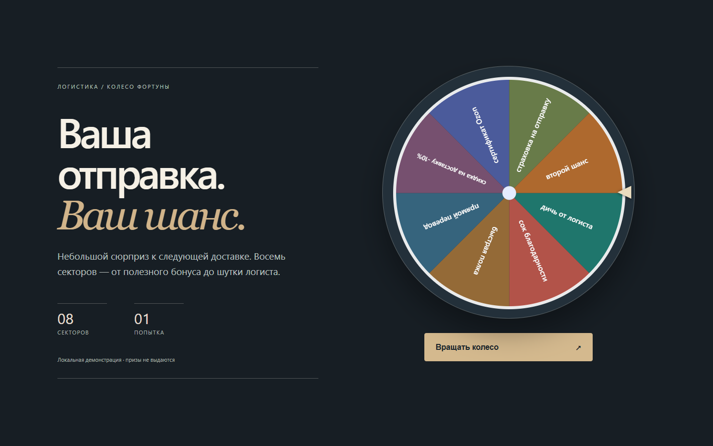
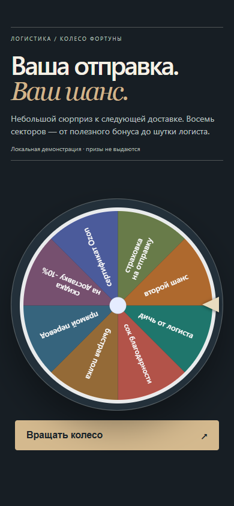
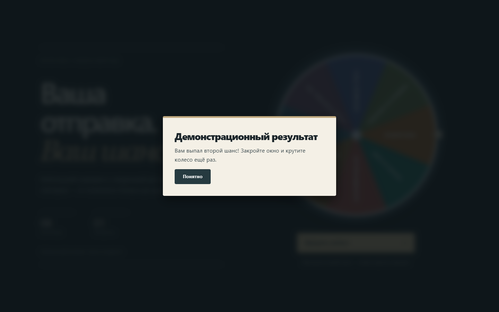
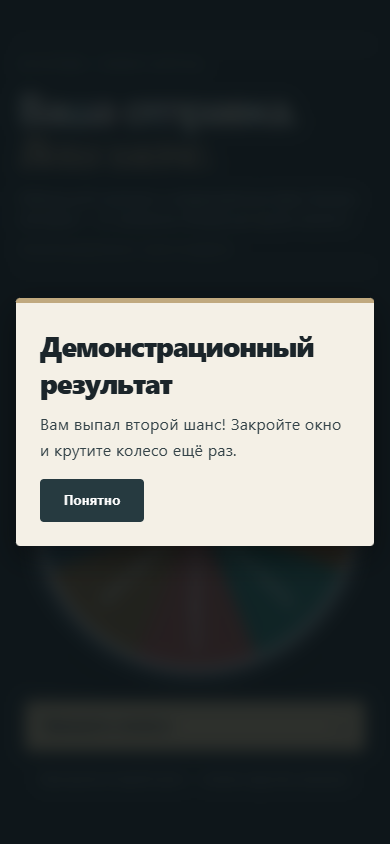
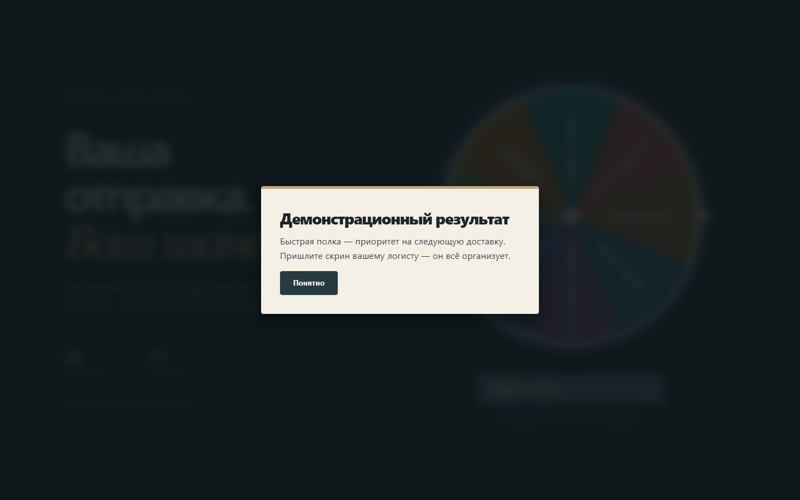
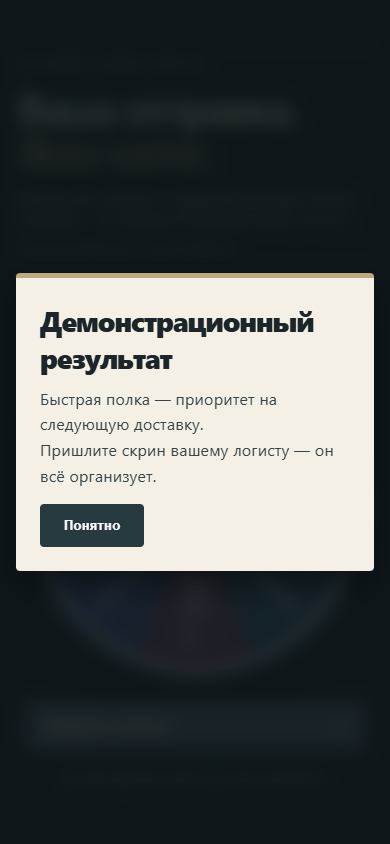
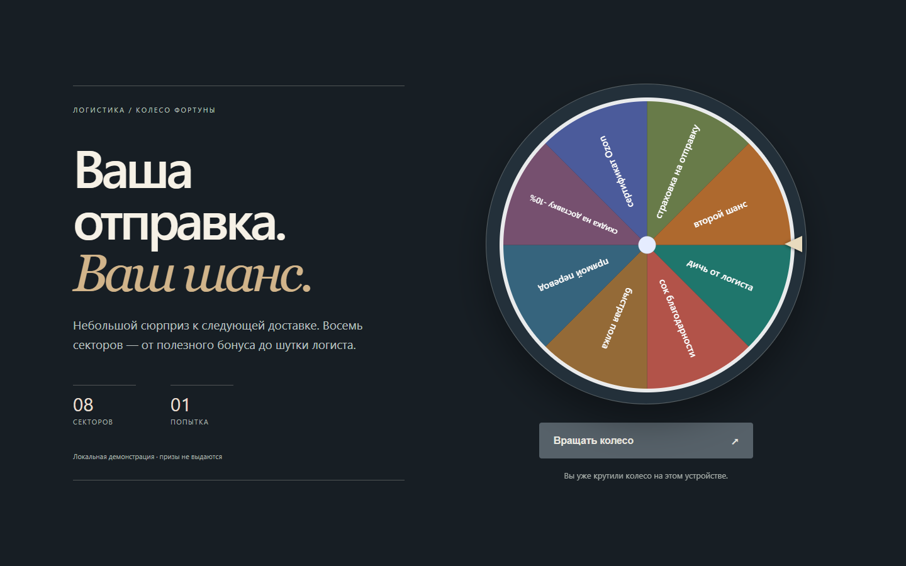
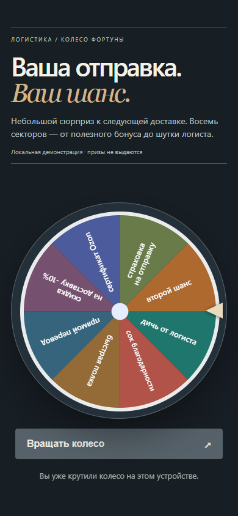

Проверенный сценарий
Каждое состояние — на настоящем экране

01 · Первый экран · 1440 px

01 · Первый экран · 390 px

02 · Второй шанс · 1440 px

02 · Второй шанс · 390 px

03 · Результат · 1440 px

03 · Результат · 390 px

04 · После перезагрузки · 1440 px

04 · После перезагрузки · 390 px
На 768 px сценарий тоже проверен: кнопка полностью помещается в первый экран высотой 900 px; кадр планшета ↗.
Локальная portfolio-версия. Исходник, доработки и demo-состояния разделены в описании. Демо не отправляет данные и не выдаёт реальные призы. Запись и все состояния пересняты 22.09.2026.